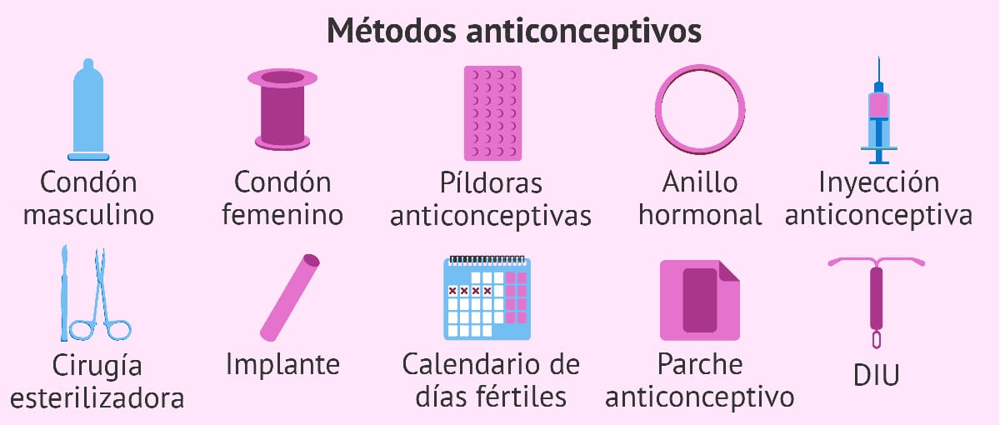

¿Cómo prevenir las Enfermedades de Transmisión Sexual?
La prevención es la forma más eficaz de evitar contagios de ETS. Implica adoptar
hábitos responsables, informarse adecuadamente y cuidar de uno mismo y de la pareja.
Métodos Principales de Prevención
- Uso correcto del condón: reduce significativamente el riesgo de transmisión.
- Pruebas médicas regulares: permiten detectar infecciones a tiempo.
- Vacunación: especialmente contra el VPH y la Hepatitis B.
- Evitar múltiples parejas sexuales: disminuye la exposición a riesgos.
- Relaciones sexuales informadas: hablar abiertamente con la pareja.
- Evitar el contacto con sangre u objetos contaminados: agujas, jeringas, etc.
- Abstinencia o prácticas de bajo riesgo: alternativa segura para jóvenes.
La Educación como Prevención
Contar con información clara y confiable es clave para reconocer riesgos y tomar
decisiones saludables respecto a la sexualidad.